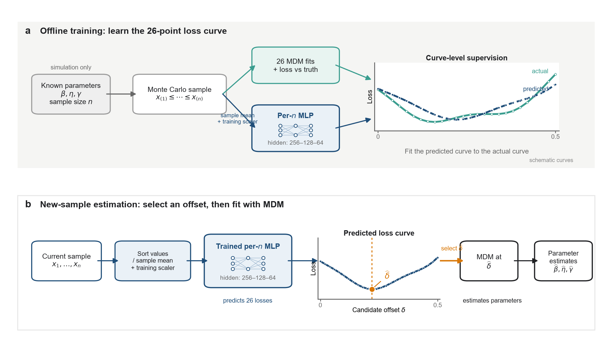
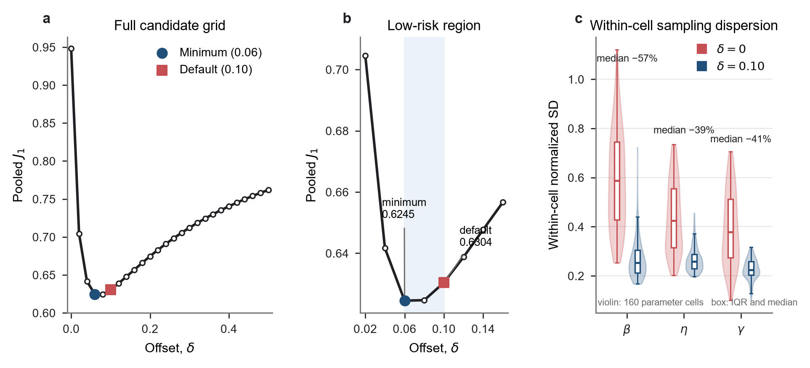
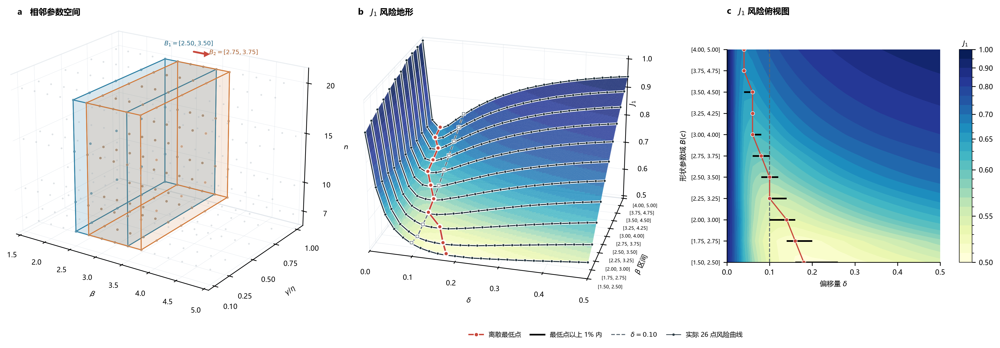
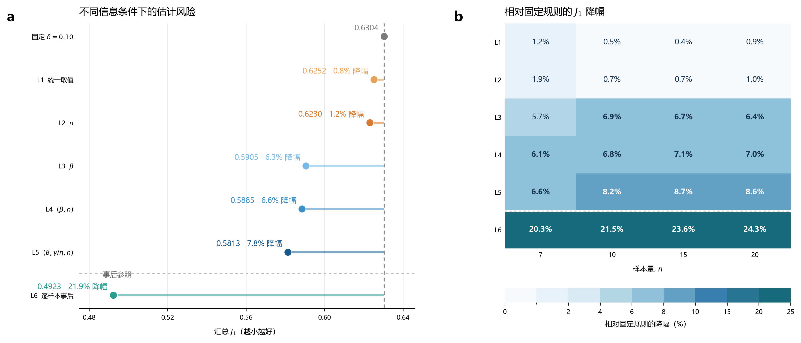
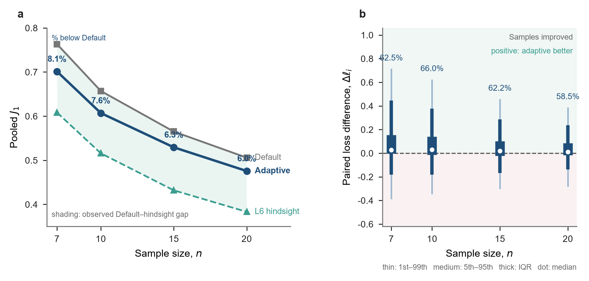
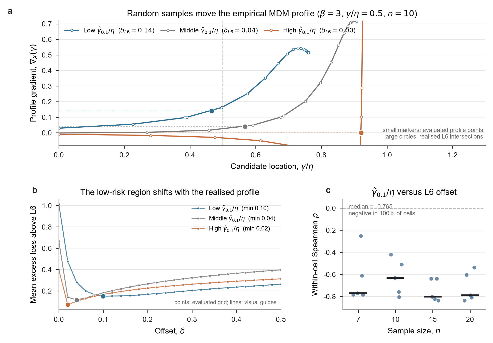

中文修订稿 v1.8，配套附录 v1.7。正文以固定随机种子 42 的折外模型报告主结果，不作多种子集成，另外两个随机种子用于附录中的初始化敏感性核查。作者、单位、基金和目标期刊格式待定。
三参数 Weibull 分布的最小差异法（MDM）通过正偏移量改善小样本估计的稳定性，但偏移量通常固定为经验值 0.1。本文研究其有限样本风险及样本自适应选择。在形状参数范围 、位置尺度比范围 和样本量 内设置 160 个离散组合，比较统一取值、参数条件规则和逐样本事后参照，并以均值归一化排序样本训练分样本量网络，预测 26 点候选损失曲线。结果显示，经验值在完整设计中接近最佳统一取值，但最佳统一偏移量随参数域平移而改变。按 水平留出评价时，自适应选择将三参数联合误差 从 0.6304 降至 0.5846，降低 7.27%；固定已训练选择器和设计条件下的配对重采样 95% 区间为 6.94%—7.64%。三个参数的汇总标准化 RMSE 均下降，160 个组合中 125 个改善、35 个退化。该评价数据也参与了输入表示筛选，区间不包含模型选择不确定性。梯度轨迹诊断支持样本实现与低风险偏移量变化之间的联系。当前收益限于所评价的离散设计，向可靠度寿命误差的传递较小。
关键词： 三参数 Weibull 分布；最小差异法；偏移量选择；小样本参数估计；多层感知机；风险曲线预测
三参数 Weibull 分布能够描述具有非零寿命起点的数据，广泛用于寿命与可靠性分析。其位置参数既确定分布的寿命起点，也使样本支持域随待估参数变化，因而增加了参数估计的难度。已有研究提出了极大似然法、矩估计法、最小二乘法及其修正方法。在小样本条件下，极大似然估计可能出现较大偏差或无有限解，其他方法的表现也会随参数条件、样本量和评价标准改变，尚无一种方法在所有条件下始终最优[1,4–7]。
针对三参数 Weibull 的小样本估计，谢里阳等[2]提出了最小差异法。该方法根据各样本点构造尺度参数的伪估计量，通过减小伪估计量之间的差异确定形状参数和位置参数，并在原研究中较极大似然法和最小二乘法表现出更好的准确性和稳健性[2]。后续研究又在位置参数搜索判据中引入正偏移量 ，进一步改善了小样本估计的精度和稳定性[3]。但 是根据算例确定的经验取值，是否存在更合适的偏移量以及如何选择，仍值得研究。
统计估计中的调节量常凭经验设定，但更合适的取值往往与当前数据有关。围绕这一问题，早期研究根据当前数据估计均方误差，为稳健回归和最小距离估计选择调节参数[9–11]；后续工作又将训练和验证风险用于调参，或利用神经网络学习非参数回归的带宽[12,13]。近年来，模拟决策方法进一步直接学习给定观测下不同候选决策的条件损失[14]。这些方法都是根据当前数据下不同候选取值的风险，代替完全固定的经验常数。
本文以三参数 Weibull 小样本 MDM 的有限样本估计误差为依据，通过比较固定偏移量、按参数条件选择和逐样本事后选择，研究偏移量的适宜取值受哪些因素影响，并在总体参数未知时，检验能否由观测样本预测候选损失曲线，实现样本自适应偏移量选择。结果表明，经验值 已位于固定偏移量的低风险区域，但适宜取值仍会随参数条件和具体样本变化；由观测样本预测候选损失曲线可以进一步降低三参数联合估计误差。
三参数 Weibull 分布的累积分布函数为
其中 、， 为位置参数。给定升序样本 ，采用中位秩估计[8]
当候选形状参数和位置参数分别为 和 时，第 个样本点给出的伪尺度参数为[2]
若候选 和 与样本所来自的分布相符， 之间的差异应较小。本文以样本标准差 表示这种差异。对每个候选 ，先求
再根据廓线 的梯度确定位置参数。沿用前期文献的记号[3]，定义 。无偏移判据对应 ；引入正偏移量后，判据写为
在非负位置参数约束下，若 ，取 ；否则在 内求交点。得到 后，取 ，并以伪尺度参数的平均值估计尺度参数：
因此，本文围绕位置参数搜索判据中的 展开研究，三参数 Weibull 模型及 MDM 的其余估计步骤保持不变。
偏移量对交点的影响可在共同搜索区间内作局部解释。固定样本量 ，以一个固定参考样本 的梯度曲线为 ，并记另一同样本量样本的曲线差为 。若两条曲线与水平线 的交点均位于共同可行区间 内，且邻域内可微、参考斜率非零、扰动及其局部斜率足够小，则
该式仅解释给定两条样本曲线的交点差，不将样本相关搜索域上的梯度直接取无条件期望，也不据此断言偏移量必然降低方差。改变 会改变交点所在位置，并通过 MDM 联合求解影响三个参数的误差；实际风险变化由后续重复抽样结果评价。局部展开及其边界见附录 B.7。
对第 个 Monte Carlo 样本，定义三参数联合损失
形状参数和尺度参数误差分别以各自真值标准化；位置参数误差以 标准化，从而避免 接近零时产生不稳定比值。对 个评价样本，汇总指标为
以固定偏移量 的方法（Default）为基准，方法 的 相对降幅定义为
其中， 为方法 在相同评价样本上的汇总指标。正值表示相对 Default 的误差降低，负值表示误差增加。下文的“ 降幅”均按此定义计算。条件风险诊断另用均方损失 比较可加的风险差，其差距占比在附录 F 单独定义；两者的百分比不能混用。
汇总三个参数的标准化误差，数值越小表示三参数联合估计误差越小。等权是本文对三个标准化参数误差的评价约定，不代表任意工程任务的损失权重；不同权重可能改变适宜偏移量。偏移量选择需要统一的标量目标：对单个样本和候选偏移量使用 ，网络据此学习 26 点损失曲线；对全部评价样本则以 汇总比较不同规则。最终参数结果另按 、 和 分别报告标准化偏差、标准差和均方根误差；前两者分别以参数真值标准化，位置参数仍以 标准化。无偏移判据与固定偏移量的稳定性比较则在每个参数组合内，根据 300 次重复抽样分别计算上述三种标准化误差的标准差，再汇总 160 个参数组合的分布。
候选偏移量为 。为了考察低风险偏移量与哪些条件有关，设置 Default 和 L1—L6 七种规则。Default 固定取 ；L1 在当前设计的全部训练样本上选择一个统一常数；L2 按样本量 选择；L3 按真值 选择；L4 按 选择；L5 按 选择；L6 对每个样本直接取 26 个实际损失中的最小值。L1 和 L2 表示简单选择规则；L3—L5 依次量化增加参数信息后的条件平均风险；L6 量化获得当前样本全部候选损失后的逐样本事后水平。
L1—L5 均采用五折交叉评价：在训练折选择偏移量，再在对应测试折计算损失。五个测试折合并后得到各信息层级的汇总结果。L6 则直接汇总每个样本在 26 个候选点上的最低实际损失。
Monte Carlo 参数设计见表 1。尺度参数固定为 ，位置参数由 与 的取值共同确定。
表 1 Monte Carlo 参数设计。
| 设计因素 | 取值 | 水平数 |
|---|---|---|
| 形状参数 | 1.5、2.0、2.5、3.0、3.5、4.0、4.5、5.0 | 8 |
| 尺度参数 | 1000 | 1 |
| 位置—尺度比 | 0.10、0.25、0.50、0.75、1.00 | 5 |
| 样本量 | 7、10、15、20 | 4 |
| 候选偏移量 | 0.00、0.02、……、0.50 | 26 |
| 每组合重复数 | 300 | 1 |
上述设计共形成 160 个参数组合和 48,000 个样本；每个样本在 26 个候选偏移量下运行 MDM，共得到 1,248,000 次估计结果。随机样本由三参数 Weibull 分布的逆累积分布变换生成，抽样种子按参数组合和重复编号确定并随代码归档。
为检验统一低风险偏移量是否随参数域改变，另将 加密为 1.50—5.00、步长 0.25，并构造宽度固定为 1.00、包含 5 个连续水平的滑动区间。区间中心由 2.00 移至 4.50，其余 、、候选偏移量和参数条件权重均保持不变。既有 8 个 水平复用主扫描的前 100 次重复，仅对 7 个新增水平按同一抽样和 MDM 入口补算。每个区间分别计算 26 点汇总 曲线、离散最低点、 相对最低点的超额 和 1% 近优区间；最低点的稳定性用 5,000 次重复块 bootstrap 描述。
信息层级与 MLP 采用两种不同的评价划分。L1—L5 按重复编号进行五折交叉评价，使每个参数组合在训练折和测试折中都有独立重复样本。MLP 检验未见 水平：对每个 ，五折依次留出一个完整的 水平，测试折包含该水平下全部 8 个 ，训练折使用其余四个水平。每个 和每个留出折分别训练模型。均值归一化 MLP、固定 和 L6 的主比较使用完全相同的折外评价样本。输入表示也在这批折外样本上进行过筛选，因此该结果是选定方法的折外评价，尚不是独立于方法筛选的最终确认；筛选过程见附录 B.3。信息层级结果与样本自适应结果分别报告，参数设计、失败处理、重复训练设置和两类划分的完整说明见附录 A、B。
实际估计时可用的信息来自当前观测样本。本文据此把偏移量选择转化为一个多输出回归任务：用当前样本预测 26 个候选偏移量对应的损失，再取预测损失最小的候选值。
对每个样本量 单独训练一个 MLP。先将样本升序排列，再除以该样本的算术平均值：
输出为预测损失向量
将网络输出逆标准化到原损失尺度，并将负预测值截为零后，选择规则及最终估计为
若多个候选预测损失相同，则取候选网格中较小的偏移量。输入为均值归一化后的排序样本。各排序位置的 StandardScaler 和 26 维目标的标准化参数均由相应训练折拟合。若某个候选偏移量的 MDM 估计失败，则以训练折有效损失的第 99 百分位数填充该候选的训练目标。网络包含 3 个隐藏层，采用 ReLU 激活函数和 Adam 优化器，以标准化后的预测损失曲线与实际损失曲线之间的平方误差训练。监督信号是每个样本在 26 个候选偏移量下的联合损失曲线 ， 用于评价阶段的样本汇总。正文以固定随机种子 42 的折外模型报告主结果，另外两个预设种子用于检验初始化敏感性。下文将这一选择器称为均值归一化 MLP（Mean-normalized MLP）。网络配置和初始化敏感性结果见附录 B。
整条曲线标签同时给出候选值及其损失大小：即使两个候选值的实际损失很接近，它们之间的差异也会保留在训练目标中。网络确定 后，仍由 MDM 完成 Weibull 参数估计。训练标签来自有真值的 Monte Carlo 样本，应用阶段的输入为当前观测样本。完整流程见图 1。
对正尺度变换 ，归一化输入满足 ，因而同一网络选择的偏移量不变。MDM 的廓线满足 ，其梯度及偏移量均为无量纲量；在相同求解和选解规则下， 不变， 与 按 倍变化。推导及数值检查见附录 B.3。

图 1 样本自适应偏移量选择方法。 a， 离线训练时，同一个 Monte Carlo 样本经 26 个候选偏移量下的 MDM 估计形成实际损失曲线，同时由对应样本量的 MLP 预测损失曲线；两条曲线之间的误差用于训练网络。b， 应用时仅输入当前样本，网络预测 26 点损失曲线并以最低点确定 ，原始样本与所选偏移量共同进入 MDM，给出 、 和 。圆点对应 26 个候选偏移量，连线用于连接离散节点；图中数值为流程示意。
为考察同一参数条件下低风险偏移量为何随样本改变，进一步分析第 2.1 节定义的 MDM 位置参数搜索曲线。以 和 标明廓线及梯度对当前样本 的依赖；即使真参数相同，不同抽样结果仍可能产生不同的梯度轨迹、内部交点或边界解。
机制诊断从参数域中预先选取 20 个参数—样本量单元，并使用未参与模型训练的 2,000 个确认样本。每个样本复用已有的 26 点损失扫描，只重新生成 MDM 梯度轨迹；随后考察 、固定 时的 与事后低风险偏移量之间的关系。参数单元、确认样本和分组方式见附录 F。
除主比较外，本文还检验未参与训练的 水平、网络初始化、整体尺度变换和不同参数条件下的效果差异。在相同的 48,000 个样本上，另以加权极大似然法（weighted maximum likelihood estimation，WMLE）和最小二乘法（least-squares estimation，LSE）作为 MDM 之外的误差参照，并将参数估计传递到可靠度寿命 。其中 满足 ：
本文评价 三个寿命点。所有方法报告汇总及分样本量的 和失败率，主方法另报告逐参数误差；主结果的不确定性采用保持方法间配对关系的重复块 bootstrap。各项验证的完整指标、失败处理和重采样设置见附录 A、B、D 和 E。
正偏移量首先收窄了重复抽样下的估计波动。对 160 个参数组合分别计算 300 次重复抽样的标准化估计标准差后， 时 、 和 的组合间中位数分别为 0.5870、0.4241 和 0.3782；采用 后降至 0.2526、0.2589 和 0.2236，中位降幅分别为 57.0%、39.0% 和 40.9%（图 2c）。 和 的 160 个组合均表现为波动减小， 为 154 个组合。这一比较验证了经验正偏移量在有限样本下改善估计稳定性的原始作用。
固定偏移量的整体误差曲线在较小正偏移量附近达到低值（图 2a、b）。26 点网格中的最低值位于 ，； 时为 0.624666， 时为 0.630409， 时升至 0.638755。经验值 比网格最低值高 0.93%，处于当前完整设计的低风险区域。该曲线汇总了当前参数范围、样本量构成和各参数条件的权重；下文进一步考察参数域改变时统一取值的移动。

图 2 正偏移量对估计稳定性和联合误差的影响。 **a，**26 个候选偏移量在整个设计域上的汇总 ；**b，**低误差区域的局部放大；**c，**在每个参数组合内分别计算 300 次重复抽样的标准化估计标准差，并比较 与 在 160 个参数组合上的分布。小提琴图表示完整分布，箱体表示四分位距和中位数；百分数表示组合间中位标准差的降幅。不同真参数组合的估计值未直接混合计算标准差。
以上结果说明，正偏移量相对于无偏移判据具有明确作用， 也可作为后续比较的固定基准。重新优化一个统一常数所得收益有限，接下来的问题是低风险偏移量受哪些参数条件和样本特征影响，以及能否利用这些差异进一步降低估计误差。
固定宽度 域平移后，汇总风险曲线及其最低点随参数域有序变化（图 3）。区间由 移至 时，离散最低点由 降至 0.04；中间三个区间的最低点依次为 0.10、0.10 和 0.08。 在 和 内恰为最低点，在最低与最高两个区间则分别比最低 高 5.06% 和 9.16%。1% 近优区间也由低 域的 0.16—0.26 移至高 域的 0.04。重复块 bootstrap 所得最低点区间与上述移动方向一致。由此可见，最佳统一偏移量是针对给定参数域定义的汇总结果；参数域改变后，统一取值也会改变。

图 3 固定宽度参数域对统一偏移量的影响。 **a，**11 个参数域在 26 个候选偏移量上的汇总 ；每格对应一个实际评价值。**b，**各域的离散最低点和最低 以上 1% 内的候选范围，竖虚线为固定偏移量 0.10。两个面板的参数域顺序相同；连线仅辅助观察离散最低点的移动。
L1—L5 在同一设计上按不同信息分组，并在训练折内为每组选择平均损失最低的偏移量。各规则的定义见表 2，分组定义见附录表 A2。
以固定 为基准，交叉评价显示，在当前设计中重新选择一个统一偏移量或按样本量查表，改善均较小（表 2）。L1 和 L2 的 分别为 0.6252 和 0.6230，相对 Default 降低 0.83% 和 1.17%。L1 给出当前参数范围、样本量构成和组合等权方式下的汇总折中，其取值随纳入评价的条件及其权重而变。
当规则可以使用真值 时，L3 降至 0.5905；继续加入 和 后，L4 和 L5 分别为 0.5885 和 0.5813。L3—L5 表明，不同参数条件下的平均损失曲线存在差异，因而按条件选择偏移量可以进一步降低风险。其中，仅区分样本量的改善很小，使用形状参数信息时改善明显增大。L2 与 L3 的信息集合并非包含关系，不将两者差值解释为逐级增加单一信息的净效应。
L6 在 26 点网格内查看当前样本的全部已实现损失，再事后选取最小值，得到 ，相对 Default 降低 21.91%。在独立确认样本中，L5 的参数条件平均选点与 L6 选点有 12.6% 完全一致；同一参数条件内，L6 偏移量的中位有效候选数为 6.09。这说明低风险偏移量既随参数条件改变，也会在同一条件内随抽样结果变化。第 3.4 节进一步检验这种样本间变化的原因。
表 2 不同信息条件下的偏移量选择。L1—L5 采用重复编号五折交叉评价；L6 为固定候选网格内的逐样本事后参照。
| 规则 | 选择信息 | 汇总 | 相对 Default 的 降幅 |
|---|---|---|---|
| Default | 固定 | 0.6304 | — |
| L1 | 全局统一 | 0.6252 | 0.83% |
| L2 | 按 | 0.6230 | 1.17% |
| L3 | 按 （真参数参照） | 0.5905 | 6.33% |
| L4 | 按 （真参数参照） | 0.5885 | 6.65% |
| L5 | 按 （真参数参照） | 0.5813 | 7.79% |
| L6 | 逐样本事后参照 | 0.4923 | 21.91% |
图 4 将表 2 的汇总结果转化为风险阶梯，并补充分样本量的相对降幅。L1/L2 在四个 下的改善均不足 2%，L3–L5 的改善则在各样本量下均明显增大。各规则相对 Default 的改善在四个样本量上方向一致，使用形状参数的规则改善较大。图中将 L6 与 L1–L5 的条件平均规则分隔显示。

图 4 不同信息条件下的估计风险。 a， 固定经验偏移量与 L1–L6 的汇总 ；水平线段表示相对 Default 的降低幅度。L1–L5 为重复编号五折交叉评价所得的条件平均规则；L6 为候选网格内的逐样本事后参照，以虚线与前五层分隔。b， L1–L6 在四个样本量下相对 Default 的 降幅；颜色和单元格数字均表示百分比。面板 a 对应表 2 的汇总结果，面板 b 提供表中未重复列出的分样本量信息。
L3–L5 说明参数条件中存在与偏移量风险有关的信息，L6 进一步显示同一参数条件内的适宜偏移量仍会随当前样本变化。本文利用 Monte Carlo 样本的真参数和各候选偏移量下的实际损失构造训练数据，由网络学习归一化排序样本与候选损失曲线之间的关系，并在应用时依据当前样本选择偏移量。
在按每个 的 水平留出评价中，样本自适应方法的汇总 为 0.584553。相同测试样本上，固定 的 为 0.630409，L6 为 0.492297（表 3）。样本自适应选择相对经验值降低 7.27%；在保持当前设计和组合等权的配对重复块 bootstrap 中，95% 区间为 6.94%—7.64%。该区间以已训练选择器为条件，不包含输入表示筛选、重新训练或参数域外推的不确定性。三种方法在该评价中均无估计失败。
表 3 样本自适应方法的主比较。MLP 按位置尺度比水平留出；固定规则和事后参照在相同折外样本上评分。
| 方法 | 汇总 | 失败率 | ||||
|---|---|---|---|---|---|---|
| Mean-normalized MLP | 0.5846 | 0.7013 | 0.6071 | 0.5294 | 0.4756 | 0.00% |
| Default（） | 0.6304 | 0.7633 | 0.6571 | 0.5651 | 0.5058 | 0.00% |
| L6（逐样本事后参照） | 0.4923 | 0.6083 | 0.5159 | 0.4319 | 0.3831 | 0.00% |
给出偏移量选择和规则比较所需的统一目标，逐参数指标用于检查这一改善如何落实到参数估计。与固定 相比，样本自适应选择下 、 和 的汇总标准化偏差绝对值、混合设计误差标准差和均方根误差均有所下降（表 4），联合指标的改善同时覆盖三个参数。
表 4 固定偏移量与样本自适应选择的逐参数误差。结果基于同一 48,000 个折外测试样本（160 个参数组合，每组合 300 次重复），样本自适应选择采用预先固定的 seed 42 折外模型；每个样本在两种规则下均有估计结果，且均无估计失败。
| 参数 | 方法 | 汇总标准化 Bias | 混合设计误差 SD | 汇总标准化 RMSE | 标准化误差 P5–P95 |
|---|---|---|---|---|---|
| 固定 | -0.2327 | 0.3293 | 0.4032 | [-0.6761, 0.3433] | |
| 样本自适应选择 | -0.2008 | 0.3165 | 0.3749 | [-0.6533, 0.3563] | |
| 固定 | -0.1998 | 0.3011 | 0.3614 | [-0.6624, 0.3107] | |
| 样本自适应选择 | -0.1827 | 0.2813 | 0.3354 | [-0.6395, 0.2934] | |
| 固定 | 0.1868 | 0.2633 | 0.3228 | [-0.2406, 0.6236] | |
| 样本自适应选择 | 0.1700 | 0.2445 | 0.2978 | [-0.2297, 0.5914] |
各样本等权汇总。这里的 Bias 和 SD 分别为混合设计下标准化误差的均值和标准差；SD 同时包含组合内抽样波动与组合间平均误差差异，不能解释为每个参数条件下的估计标准差。图 2 的固定偏移量稳定性比较则先在组合内计算 SD，两者口径不同。 和 的误差分别除以其真值， 的误差除以真尺度参数 ；P5–P95 表示标准化带符号误差的第 5—95 百分位区间，便于在 160 个真值不同的参数组合间汇总比较。
四个已训练样本量下，均值归一化 MLP 的 依次为 0.7013、0.6071、0.5294 和 0.4756，均低于固定 （图 5a）。各方法的误差都随 增大而下降，样本自适应选择保持了样本量增加后估计更准确的基本趋势。四个结果分别汇总了对应样本量下五个留出折的预测。
汇总 之外，逐样本配对结果进一步显示了改善的分布。令 ，正值表示样本自适应选择误差更低； 时， 的样本比例分别为 62.5%、66.0%、62.2% 和 58.5%，各组中位数均为正（图 5b）。负值尾部对应样本自适应选择误差高于固定偏移量的样本。

图 5 不同样本量下的总体与逐样本结果。 a， 均值归一化 MLP、固定经验偏移量和逐样本事后参照在四个已训练样本量下的汇总 ；阴影表示 Default 与 L6 之间的观测差距。b， 逐样本配对损失差 的分布；细线、中线、粗线和白点依次表示第 1—99、第 5—95 百分位区间、四分位距和中位数，百分数表示误差降低的样本比例。
预测曲线的代表例、所选偏移量与事后选点的对应分布，以及相对 L6 的超额损失分布见附录图 B1。预测的用途是选择低损失候选值，格点命中率不作为估计精度的替代指标。
参数组合层面的改善存在差异。160 个 组合中，125 个组合的 低于固定 ，35 个组合发生退化，最大退化为 17.50%。对 160 个设计单元均值进行配对重采样时，汇总降幅的 95% 设计构成敏感性范围为 6.04%—8.46%。退化较多出现在 网格边界，并在较大样本量下更常见。完整参数空间热图见附录 F。
除参数组合间差异外，同一参数条件内的抽样变化也会伴随 MDM 经验梯度曲线和低风险偏移量的移动。在 20 个预设参数单元中， 与 L6 偏移量的单元内 Spearman 相关系数中位数为 0.652，四分位区间为 0.549—0.779，19 个单元方向为正。固定 时的 与 L6 偏移量呈更稳定的反向关系：相关系数中位数为 ，四分位区间为 ，20 个单元方向均为负（图 6）。按 从低到高分组后，平均超额损失曲线的最低点依次位于 、0.04 和 0.02。L6 位置估计落在 边界的样本占 7.1%；这些诊断与经验梯度曲线及搜索交点随样本变化的解释一致，但未分离各机制对风险改善的贡献。

图 6 有限样本波动与 MDM 偏移量选择。 **a，**在相同真参数 下，三个确认样本的经验梯度轨迹；纵轴覆盖全部重建节点。**b，**同一组曲线的搜索交点区域，横轴和纵轴均作局部放大；完整曲线见面板 a。小圆点为重建节点，大圆点为 L6 交点，颜色在各面板保持一致。**c，**20 个诊断单元内按固定偏移量位置估计分为低、中、高三组后的平均超额损失；圆点为 26 个实际评价候选。**d，**各单元内固定偏移量位置估计与 L6 偏移量的 Spearman 相关。三个代表样本仅展示轨迹，统计结果来自 2,000 个确认样本；图不分解各机制对网络收益的贡献。
在同域拟合且使用独立重复确认的比较中，同结构 MLP 与较灵活的 -only 经验参照分别取得 和 0.5618；二者的配对均方损失差为 −0.007010，95% bootstrap 区间为 [−0.008727, −0.005408]。这说明在该同域任务中，可观测输入仍有未被当前结构充分利用的信息。论文留出规则在同一确认样本上的 ，但训练覆盖和评价任务不同，不把它与同域参照的全部差距归因于网络表达能力。完整风险路径见附录 F。
两个辅助初始化与主模型的汇总 均落在 0.5846—0.5855，表明主结果在这三个预设初始化下的波动较小。逐一留出 水平时，样本自适应方法的汇总 为 0.5841，较固定 降低 7.35%；其中七个留出水平保持改善， 略有退化。完整分层结果见附录 B 和 D。
在相同 48,000 个样本和同一 定义下，WMLE 和 LSE 的汇总 分别为 0.7288 和 0.8725，均高于样本自适应 MDM 的 0.5846。参数误差的改善向可靠度寿命的传递则较小：样本自适应方法在 上略差于固定偏移量，在 和 上略好，而 WMLE 在三个寿命点上均取得最低相对 RMSE。传统方法和可靠度寿命的完整比较见附录 E；尺度等变检查见附录 B.3。
这些结果给出了三种实际取值方式。若只能采用一个固定偏移量，取值应对应预期的参数范围、样本量构成和各条件权重。当前宽混合参数域内， 距离描述性最低点的 仅约 0.9%，可以作为简单而稳健的默认值；对于范围较窄且事先明确的应用域，可重新计算该域的汇总风险曲线。由此得到的统一值仍是域内各参数条件的折中，而不是脱离参数域的通用最优常数。
若只增加已知样本量信息，按 分别设置偏移量相对固定 仅改善约 1.2%，没有显示出维护多套固定规则的明显必要性。总体参数未知但当前样本可观测时，损失曲线预测将汇总 降低约 7.3%，并降低三个参数的汇总标准化 RMSE；汇总偏差绝对值和混合设计误差 SD 也有所下降。这些结果支持在与训练设计相符的样本量和参数范围内继续验证样本自适应选择；最终应用模型仍需独立确认。缺少相应训练覆盖时，可保留固定 作为待比较的基准。
参数条件和样本实现从两个层面影响偏移量。L3—L5 表明，不同参数条件具有不同的平均损失曲线；图 6 则显示，即使真参数相同，次序统计量和样本间距的随机变化仍会改变伪尺度参数、廓线 及其梯度 。搜索交点随之移动，并通过 MDM 的联合求解改变三个参数的估计误差。20 个诊断单元中， 与事后低风险偏移量均呈反向关系，为这条数值链提供了关联性证据，不能单独确定当前网络利用了哪些具体信息。
实际选择只能利用当前样本。若将可观测输入记为 ，以当前训练设计的参数混合分布及其权重定义条件期望，对应的理想规则是
它与 L6 的区别在于：前者依据当前样本条件下的期望损失作决策，后者还看到了真参数和当前样本在 26 个候选点上的全部已实现损失。二者之间因此包含无法由普通应用信息消除的事后信息差，不能把 MLP 与 L6 的距离全部解释为网络尚未学好。
均值归一化的排序样本保留了样本内的相对位置、间距和离散结构。以整条损失曲线为监督信号，还能保留相邻候选偏移量之间的损失差，而不只记录最低格点。较灵活的 -only 参照取得更低确认风险，说明当前网络仍有改进空间；该参照使用全部设计单元拟合，而主方法检验未见 水平，两者承担的评价任务不同。
利用初估参数查询条件规则也是一种可能的实现，但本研究检验的 12 种规则均未降低整体 ，迭代后误差进一步增加。损失曲线预测绕过了先估参数再匹配规则的中间步骤；初估规则的完整结果见附录 C。
WMLE 和 LSE 将样本自适应 MDM 放回传统参数估计方法中比较。在当前参数设计和联合误差准则下，样本自适应 MDM 的 低于这两种方法；这种排序服务于本文的参数估计目标，并不代替针对其他参数域或评价指标的方法选择。
可靠度寿命结果说明了参数联合误差与工程指标之间的差别。 对三个标准化参数误差的平方等权求和，而 对各参数的敏感度取决于可靠度和参数值，其误差还受到参数估计误差之间协方差的影响（附录 E.3）。三个参数的误差分别下降，未必使这一特定组合量按相同比例改善。当前方法的直接收益体现在三个参数的汇总标准化误差指标；在三个可靠度寿命点上，WMLE 的相对 RMSE 更低。若实际任务主要关注某一寿命点，应按该寿命点的误差选择方法。将候选损失改为寿命点误差，是面向该目标的后续研究方向。
本文采用离散参数与偏移量网格，并只对 分别训练网络。研究对象为独立同分布、完整观测且位置参数非负的样本。逐一留出 水平时，七个水平保持改善， 出现局部退化；连续参数域和其他样本量仍需进一步检验。均值归一化输入及端到端尺度检查支持正倍率变换下的等变关系。L6 只表示当前 26 点候选网格上的事后水平；仅对右端损失仍下降的 2,186 个样本将候选上限延伸至 1.00，其余样本沿用原网格时，所得汇总事后参照的 进一步降低约 0.29%（附录 A.5）。这不是全部样本在扩展网格上的穷尽最优结果。
现有结果尚未在独立于输入表示筛选的新重复样本上完成最终确认；新增确认评价应先冻结表示、训练和选点规则。真实数据的示例价值取决于数据是否与研究范围匹配。当前 Monte Carlo 设计利用已知参数真值直接评价估计误差，后续真实数据研究还需纳入模型偏离、测量误差、删失和混合失效机制。
本文表明，三参数 Weibull 小样本 MDM 的统一偏移量由纳入评价的参数范围、样本量构成和条件权重共同决定。 在当前宽混合参数域中接近最佳统一取值，可作为稳健的默认规则；参数条件和同一条件内的抽样波动则为进一步选择留下了空间。
在真参数未知时，以均值归一化排序样本预测 26 点损失曲线，并由 MDM 在所选偏移量下完成参数估计，可将汇总 从 0.6304 降至 0.5846，相对降低 7.3%。这一改善覆盖四个已训练样本量，并落实到三个参数的汇总标准化 RMSE。当前证据来自参与过表示筛选的折外评价，限于离散设计域和已训练样本量；未见 水平存在局部退化，可靠度寿命上的改善也明显小于参数联合误差的改善。
本文 Monte Carlo 设计、估计程序、模型训练代码、逐样本结果、汇总表和绘图脚本均已归档。投稿时将在不违反仓库与数据管理要求的前提下提供匿名代码与必要的结果数据，并以最终存档地址替换本段。
[待作者名单和分工确定后填写。]
[待填写。]
[待全体作者确认后填写。]
[1] Yang X, Xie L, Liu Y, et al. A review of parameter estimation methods of the three-parameter Weibull distribution. In: 2023 9th International Symposium on System Security, Safety, and Reliability (ISSSR). 2023: 20–31. doi:10.1109/ISSSR58837.2023.00013.
[2] Xie L, Wu N, Yang X. A minimum discrepancy method for Weibull distribution parameter estimation. International Journal of Structural Stability and Dynamics. 2023;23(8):2350085. doi:10.1142/S0219455423500852.
[3] 谢里阳, 朱文慧, 吴宁祥, 杨小玉. 基于统计最小差异原理的 Weibull 分布参数估计方法. 东北大学学报（自然科学版）. 2025;46(7):108–112+130. doi:10.12068/j.issn.1005-3026.2025.20240194.
[4] Cohen AC, Whitten B. Modified maximum likelihood and modified moment estimators for the three-parameter Weibull distribution. Communications in Statistics—Theory and Methods. 1982;11(23):2631–2656. doi:10.1080/03610928208828412.
[5] Cousineau D. Fitting the three-parameter Weibull distribution: review and evaluation of existing and new methods. IEEE Transactions on Dielectrics and Electrical Insulation. 2009;16(1):281–288. doi:10.1109/TDEI.2009.4784578.
[6] Akram M, Hayat A. Comparison of estimators of the Weibull distribution. Journal of Statistical Theory and Practice. 2014;8(2):238–259. doi:10.1080/15598608.2014.847771.
[7] Teimouri M, Hoseini SM, Nadarajah S. Comparison of estimation methods for the Weibull distribution. Statistics. 2013;47(1):93–109. doi:10.1080/02331888.2011.559657.
[8] Benard A, Bos-Levenbach EC. Het uitzetten van waarnemingen op waarschijnlijkheids-papier. Statistica Neerlandica. 1953;7(3):163–173. doi:10.1111/j.1467-9574.1953.tb00821.x.
[9] Kelly G. Adaptive choice of tuning constant for robust regression estimators. Journal of the Royal Statistical Society: Series D (The Statistician). 1996;45(1):35–40. doi:10.2307/2348409.
[10] Warwick J. A data-based method for selecting tuning parameters in minimum distance estimators. Computational Statistics & Data Analysis. 2005;48(3):571–585. doi:10.1016/j.csda.2004.03.006.
[11] Warwick J, Jones MC. Choosing a robustness tuning parameter. Journal of Statistical Computation and Simulation. 2005;75(7):581–588. doi:10.1080/00949650412331299120.
[12] Zhang C, Zhang T, Yin F, Zoubir AM. Data-adaptive M-estimators for robust regression via bi-level optimization. Signal Processing. 2023;210:109063. doi:10.1016/j.sigpro.2023.109063.
[13] Giordano F, Parrella ML. Neural networks for bandwidth selection in local linear regression of time series. Computational Statistics & Data Analysis. 2008;52(5):2435–2450. doi:10.1016/j.csda.2007.08.013.
[14] Gorecki M, Macke JH, Deistler M. Amortized Bayesian decision making for simulation-based models. Transactions on Machine Learning Research. 2024. OpenReview:BQE4MTAfCE.